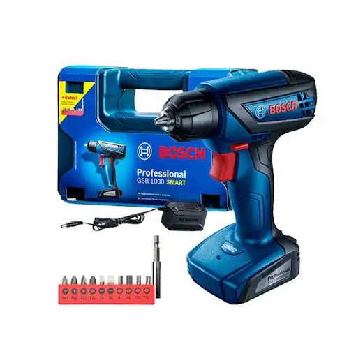
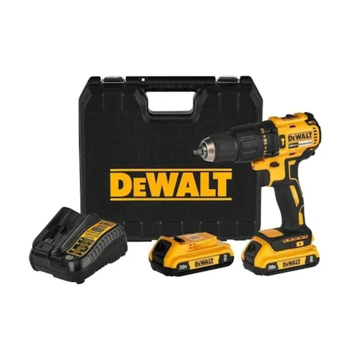
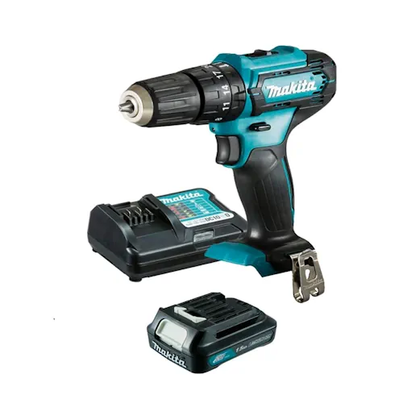
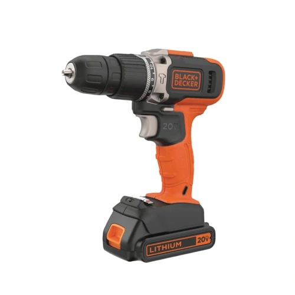
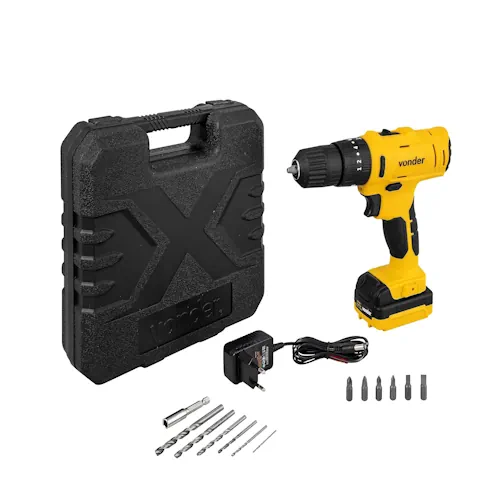
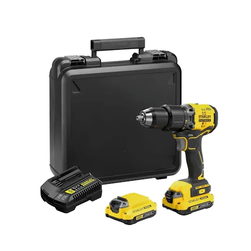
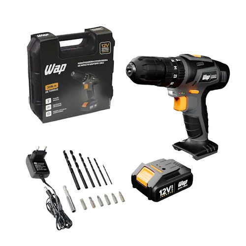

As parafusadeiras são ferramentas essenciais tanto para profissionais quanto para quem gosta de fazer pequenos reparos e projetos DIY. Em 2025, o mercado está repleto de opções inovadoras, com modelos cada vez mais potentes, ergonômicos e tecnológicos. Mas, com tantas opções, como escolher a melhor parafusadeira para suas necessidades?
Neste artigo, analisamos as 7 melhores parafusadeiras do ano, considerando critérios como potência, bateria, funcionalidades e custo-benefício. Vamos conferir!
As parafusadeiras são ferramentas essenciais para quem busca praticidade e agilidade na montagem e manutenção de estruturas. Projetadas para otimizar o aperto e remoção de parafusos, elas reduzem o esforço manual e garantem um acabamento mais preciso. Com opções elétricas e a bateria, atendem desde pequenos reparos domésticos até demandas profissionais. Modelos compactos oferecem versatilidade para trabalhos delicados, enquanto versões mais robustas entregam alto torque para materiais resistentes. Recursos como velocidade ajustável, iluminação LED e controle de torque ampliam a eficiência e segurança no uso. A mobilidade também é um diferencial: versões sem fio permitem maior liberdade de movimento, enquanto as com fio garantem energia constante para tarefas prolongadas. Além disso, avanços em tecnologia trouxeram baterias de longa duração e carregamento rápido, garantindo maior produtividade. Seja para profissionais da construção civil, marceneiros ou entusiastas do "faça você mesmo", a parafusadeira se tornou uma aliada indispensável. Escolher o modelo ideal faz toda a diferença para executar projetos com mais precisão, conforto e rapidez.

A Bosch GSR1000 Smart continua sendo uma das preferidas do mercado graças à sua combinação de potência e praticidade. Esse modelo possui uma bateria interna de 12V, garantindo autonomia suficiente para diversos trabalhos. Além disso, conta com um sistema de proteção contra sobrecarga, aumentando sua durabilidade.

A Dewalt DCD7781 se destaca pela robustez e versatilidade, sendo indicada para trabalhos mais exigentes. Seu motor potente de 20V permite perfuração em diversos materiais, além de parafusamento eficiente. O sistema de duas velocidades proporciona maior controle e precisão durante o uso.

A Makita HP333 é uma das parafusadeiras mais práticas e acessíveis do mercado. Seu design dobrável facilita o armazenamento e transporte, tornando-a ideal para quem precisa de uma ferramenta compacta e eficiente. Além disso, seu acionamento por botão oferece maior conforto no manuseio.

A Black+Decker BCD704 é conhecida pelo equilíbrio entre desempenho e preço acessível. Esse modelo de 20V oferece potência suficiente para diversas aplicações, além de ser fácil de usar. Seu design ergonômico permite um uso mais confortável por longos períodos.

A Vonder PFV120I é uma parafusadeira de 12V com excelente autonomia e praticidade. Seu design robusto e sua empunhadura ergonômica garantem um uso confortável e seguro.

A Stanley SBD715 é um modelo de 20V com tecnologia brushless, proporcionando maior durabilidade e eficiência. Ideal para quem busca potência e precisão.

Com 12V de potência, a Wap BPFI 12K4 se destaca pela leveza e facilidade de uso. É uma excelente opção para serviços domésticos e pequenos reparos.
Ao longo deste guia, exploramos as 7 melhores parafusadeiras de 2025, analisando seus principais atributos, vantagens e desvantagens. Como vimos, cada modelo atende a necessidades específicas, desde trabalhos domésticos simples até projetos profissionais mais exigentes. Se você busca um modelo compacto e acessível, opções como a Black+Decker BCD704 e a Makita HP333 são ótimas escolhas, oferecendo um bom equilíbrio entre custo e desempenho. Já para quem precisa de maior potência e robustez, a Dewalt DCD7781 e a Stanley SBD715 se destacam, garantindo um desempenho superior em trabalhos mais pesados. Além disso, aspectos como autonomia da bateria, ergonomia e recursos adicionais, como luz LED e ajuste de torque, são fundamentais na escolha da ferramenta ideal. O modelo Bosch GSR1000 Smart, por exemplo, é excelente para quem valoriza praticidade e durabilidade, enquanto a Wap BPFI 12K4 e a Vonder PFV120I são indicadas para quem busca um equipamento leve e eficiente para tarefas do dia a dia. Portanto, a melhor parafusadeira será aquela que atende às suas necessidades e se encaixa no seu orçamento. Esperamos que este guia tenha ajudado você a tomar uma decisão mais informada para adquirir a ferramenta certa e otimizar seus projetos com eficiência e precisão.